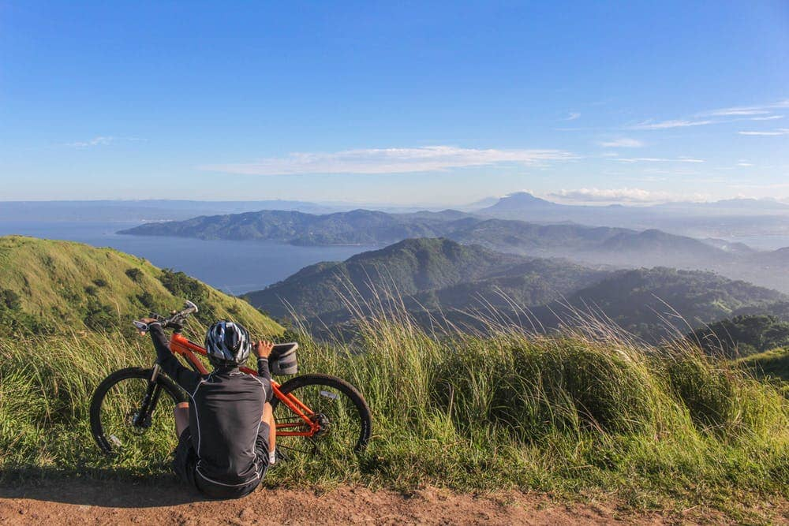
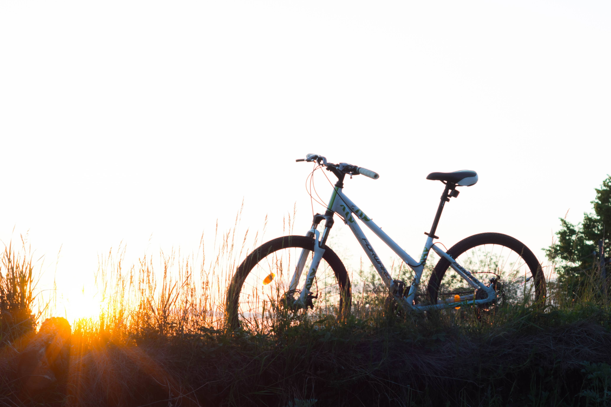

Моє хобі
 Я полюбляю кататися на велосипеді. Він був з дитинстав, і з часом просто мінялися велосипеди. Люблю кататися по лісах, полях. Також багато часу я просто намотую по місту. У справах або просто проводжу в такий спосіб свій вільний час. Для мене їзда на велосипеді свого роду медитація та можливість активно провести час.
 Мені подобаються MTB велосипеди. Бо я часто їжджу по грунтовій дорозі. Наразі маю веломипед марки Renault. Як на мене він замал для мене, 21' рама та 26' колеса зараз ще дуже популярні, але вже не в тренді. Покупка по класиці: велосипед б/у з Європи, куплений у людини, яка їх возить. Як завжди в таких випадкає були проблеми, які не можливо одразу визначити або не визначив через брак досвіду у таких покупках. В моєму випадку це виявилися колеса.і